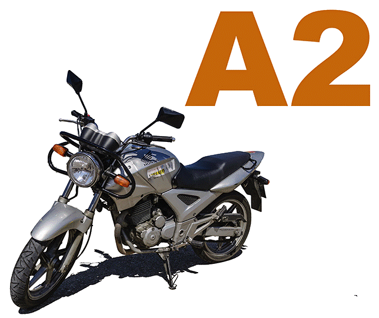

CONTENIDO:
1. Normativa ADR.
2. Nociones básicas de química.
3. Clasificaciones mercancías peligrosas.
4. Control y vigilancia sobre el lugar de trabajo y su entorno.
5. Envases y embalajes
6. Documentación
7. Tipos de vehículos y equipamiento especial.
8. Conducción de vehículos
9. Operación de carga y descarga
10. Actuación en caso de emergencia
OBJETIVO
Preparar al alumnado para la adquisición
de los conocimientos teóricos adecuados
así como los hábitos prácticos necesarios y
suficientes de cara a la superación de las
pruebas establecidas para conseguir
SE DEBE HACER RENOVACIÓN A LOS 5 AÑOS
CONTENIDO:
1. CONCEPTOS BÁSICOS
SOBRE SEGURIDAD Y SALUD
EN EL TRABAJO. MARCO
NORMATIVO.
2. RIESGOS GENERALES Y SU
PREVENCIÓN.
3. RIESGOS ESPECÍFICOS EN
MAQUINARIA.
4. MEDIDAS PREVENTIVAS
APLICADAS A MAQUINARIA
AGRÍCOLA.
5. PREVENCIÓN DE RIESGOS
CON MAQUINARIA
AGRÍCOLA.
6. LA SEGURIDAD EN LA
MAQUINARIA AGRÍCOLA OBJETIVO
Identificar cuáles son los riesgos que
conlleva una mala actuación en la
utilización de maquinaria agrícola,
aplicando los procedimientos adecuados
para un uso seguro de la maquinaria MODALIDAD
ONLINE 20H.
PRL MAQUINARIA AGRíCOLA
CARRETILLA ELEVADORA
formación Am¡car
CONTENIDO:
UD1. El oficio del operador
de carretillas.
UD2. La carretilla elevadora.
UD3. Mecánica y
mantenimiento de la
carretilla.
UD4. Manejo de carretillas
elevadoras.
UD5. Simbología.
UD6. Seguridad en la
conducción de carretillas.
UD7. Ergonomía en la
conducción de carretillas.
UD8. Normativa aplicabl OBJETIVO
Adquirir las competencias y habilidades
necesarias para la correcta conducción y
manejo de carretillas elevadoras con
control de las cargas total y seguridad del
area MODALIDAD
ONLINE/PRESENCIAL 10H.
+ PRÁCTICAS
PUEDEN REALIZARSE EN LA
PROPIA EMPRESA
CARRETILLA ELEVADORA
OPERADOR DE RETROEXCAVADORA Y PALA CARGADORA formación Am¡car
CONTENIDO:
UD1. Las plataformas móviles
de personal.
UD2. Seguridad en el manejo
de los PEMP.
UD3. Riesgos y medidas de
prevención durante el
manejo de los PEMP.
UD4. Mantenimiento de las
PEMP. OBJETIVO
Adquirir las competencias y habilidades
necesarias para manejar plataformas
elevadoras móviles de personal (PEMP) en
condiciones de seguridad. MODALIDAD
ONLINE/E-LEARNING 12H.
+ PRÁCTICAS
PUEDEN REALIZARSE EN LA
PROPIA EMPRESA
OPERADOR PLATAFORMAS MÓVILES
OPERADOR DE CARRETILLA TELESCÓPICA (MANITOU) formación Am¡car
CONTENIDO:
Tema 1. Introducción
Tema 2. Definición
Tema 3. Partes manipuladora
telescópica
Tema 4. Tipos y clasificación
Tema 5. Usos
Tema 6. Normativa de aplicación
Tema 7. Accidentes más
frecuentes
Tema 8. Prevención de accidentes
y riesgo
Tema 9. Manuales
Tema 10. Placas
Tema 11. Mantenimiento e
inspección
Tema 12. Formación del operador. OBJETIVO
Adquirir las competencias y habilidades
necesarias para realizar gestiones de
operador y manipulador telescópica y su
correcto funcionamiento con el fin de
evitar situaciones de riesgo. MODALIDAD
ONLINE/E-LEARNING 10H.
+ PRÁCTICAS
PUEDEN REALIZARSE EN LA
PROPIA EMPRESA
OPERADOR DE CARRETILLA TELESCÓPICA (MANITOU)
PRL MOVIMIENTOS DE TIERRA (MINI PALA Y ORUGA) formación Am¡car
CONTENIDO:
Tema 1. Riesgos para la salud
por exposición a polvo y SCR.
Tema 2. Materias manipuladas y
riesgo de puesta en suspensión.
Tema 4. Control del riesgo: Las
mediciones.
Tema 5. Medidas de protección
contra el polvo y la SCR.
Tema 6. Equipos de protección
respiratoria: uso, ajuste y
mantenimiento.
Tema 7. Buenas y malas
prácticas preventivas
Tema 8. Derecho a la
información y participación de
los trabajadores. OBJETIVO
Prevenir las enfermedades profesionales
causadas por polvo y SCR de los
trabajadores expuestos en la industria de
rocas y minerales industriales en procesos
de extracción, elaboración y manipulado,
haciendo el uso adecuado de las medidas
de protección colectivas e individuales. MODALIDAD
10 HORAS.
ITC SILICE Y POLVO
CAP INICIAL MERCANCIAS/VIAJEROS formación Am¡car
CONTENIDO:
Bloque I: Aplicación de la
reglamentación y normativa
de transportes.
Bloque II: Mecánica y
mantenimiento de
vehículos.
Bloque III: Salud, seguridad
vial y medioambiental,
servicio, logística. OBJETIVO
Obtención de una acreditación profesional
europea que avala que has superado los
exámenes para ser un conductor
profesional capaz de ejercer la profesión
en todos los países que forman parte de la
Unión Europea. MODALIDAD
PRESENCIAL
130H. TEÓRIA + 10 H PRÁCTICAS
SE PUEDE REALIZAR PACK CON
PERMISO C /C+E /D
CAP INICIAL MERCANCIAS/VIAJEROS
CAP AMPLIACIÓN MERCANCIAS/VIAJEROS formación Am¡car
CONTENIDO:
Bloque I: Aplicación de la
reglamentación y normativa
de transportes.
Bloque II: Mecánica y
mantenimiento de
vehículos.
Bloque III: Salud, seguridad
vial y medioambiental,
servicio, logística. OBJETIVO
Ampliar el perfil profesional como
transportista. El curso CAP Ampliación
tiene una duración más corta que el inicial
porque concentra únicamente el
contenido específico que se desea
acreditar. MODALIDAD
PRESENCIAL 32'5H. TEÓRIA + 2'5 H PRÁCTICAS SE PUEDE REALIZAR PACK CON
PERMISO C /C+E /D
CAP AMPLIACIÓN MERCANCIAS/VIAJEROS
CAP RENOVACIÓN MERCANCIAS/VIAJEROS formación Am¡car
CONTENIDO:
Bloque I: formación
avanzada sobre conducción
racional basada en las
normas de seguridad.
Bloque II: aplicación de la
reglamentación.
Bloque III: salud, seguridad
vial y medioambiental,
servicio, logística. OBJETIVO
Deben hacerlo todos los conductores
profesionales cada cinco años. Estos cursos
para renovar el CAP para el transporte de
mercancias deben realizarse durante toda
su vida profesional MODALIDAD
PRESENCIAL 35H
CONTENIDO:
Tema I: Introducción
Tema II: Aspectos generales
sobre EPI’S
Tema III: Clasificación de
EPI’S
Tema IV: Selección de EPI’s
Tema V: Elementos
auxiliares. OBJETIVO
Identificar los diferentes equipos de
protección individual a utilizar en cada
tipo de trabajo y aplicar conocimientos
adquiridos en este curso para promover el
uso adecuado de los equipos de
protección individual. MODALIDAD
ONLINE 10H
CONTENIDO:
L@s alumn@s deberán superar las
pruebas psicofísicas
correspondientes.
La edad mínima para obtener el
permiso es de 16 años
Teórico común : Quedará exento
de realizarlo si posee cualquier
otro permiso,
independientemente de su
antigüeda OBJETIVO
Proceeso para obtener el permiso de
conducir que permite manejar motocicletas
con una cilindrada máxima de 125 cc y una
potencia máxima de 11 kW
(aproximadamente 15 CV) MODALIDAD
TEÓRICO
PRESENCIAL/ONLINE
PERMISO A1

PERMISO A2 formación Am¡car
CONTENIDO:
Manejar motocicletas con una
potencia de hasta 35 kW de
cualquier cilindrada. Recuerda
que para la obtención de este
permiso de moto necesitarás
ser mayor de edad. Pero si
cuentas con el carnet A1, al
menos, durante 2 años, tendrás
solamente que presentarte al
examen práctico. OBJETIVO
Si quieres sacarte el permiso de moto A2,
primero que todo, necesitas ser mayor de
edad. Además, vas a tener que presentarte a
una prueba teórica y dos prácticas, estas
últimas llevadas a cabo en un circuito
cerrado y otro abierto. MODALIDAD
TEÓRICO
PRESENCIAL/ONLINE
PERMISO A2
PERMISO A formación Am¡car
CONTENIDO:
Tres horas de conocimientos
teóricos, dos horas de
circuito cerrado y cuatro
horas de circulación en vías
abiertas al tráfico general
Obligación de hacer horas
prácticas de conducción en
carretera convencional. Dos
de las cuatro horas de
formación en circulación en
vías abiertas al tráfico
deberá discurrir
obligatoriamente en
carretera convencional. OBJETIVO
Permite conducir cualquier tipo de
motocicleta, incluyendo triciclos de motor,
sin limitaciones de potencia o cilindrada.
Para obtenerlo, es necesario tener al menos
20 años y dos años de experiencia con el
permiso A2. MODALIDAD
TEÓRICO
PRESENCIAL/ONLINE
PERMISO A
PERMISO C formación Am¡car
CONTENIDO:
Bloque I: El conductor y el
vehículo.
Bloque II: Normas de
circulación.
Bloque III: Uso de las vías
públicas.
Bloque IV: Reglamentación
sobre vehículos pesados.
Bloque V: Seguridad Vial.
Bloque VI: El disco diagrama
y el tacógrafo.
Bloque VII: Mantenimiento
preventivo básico. OBJETIVO
Permite conducir camiones de gran
tonelaje. Si el peso del vehículo está
entre 3500 kg y 7500 kg, se requiere la
licencia C1, que puede obtenerse a partir
de los 18 años. Con esta licencia se
permite el transporte de remolques
acoplados al camión. MODALIDAD
TEÓRICO
PRESENCIAL/ONLINE
PERMISO C
PERMISO C+E formación Am¡car
CONTENIDO:
Para obtener este carnet de
conducir es necesario tener al
menos 18 años y disponer
previamente del Carnet de
Conducir C. Además, será
necesario superar diferentes
pruebas, tales como: prueba de
conocimientos, prueba de
práctica en circuito cerrado y
abierto, así como la prueba de
aptitud psicofísica.
Los test del carnet de tráiler se
pueden realizar online y en el
momento que desees, con un
horario totalmente flexible para
que no tengas que interrumpir
tus jornadas laborales, entre
muchas otras actividades. OBJETIVO
Permite circular por las vías públicas a los
mandos de un vehículo que podrá
arrastrar un remolque de más de 750 Kg.,
destinado al transporte de mercancías o
un semirremolque arrastrado por una
cabeza tractora, cuyo conjunto podrá
mover una M.M.A. MODALIDAD
TEÓRICO
PRESENCIAL/ONLINE